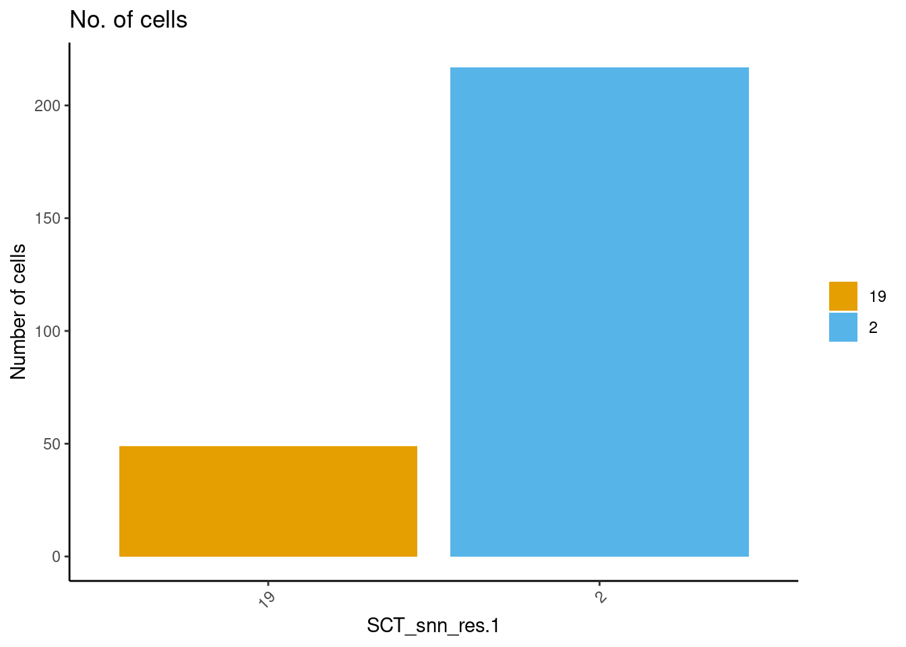
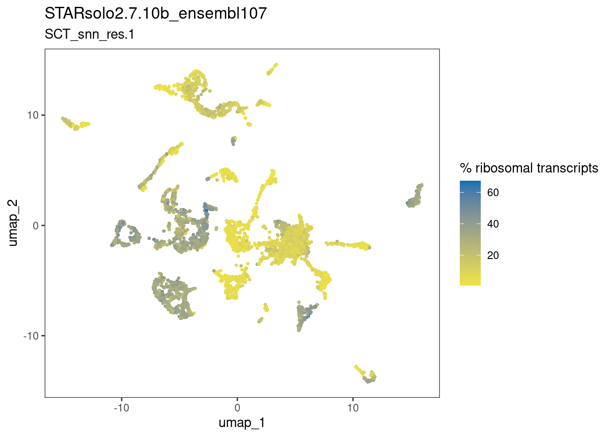

path1 <- "/home/chongmorrison/Dropbox/VCM-StarBook/ResearchProjects/parapineal/preprocessing/foxd3flhGFP/cellranger7.1.0_Lawson/filtered_feature_bc_matrix"
path2 <- "/home/chongmorrison/Dropbox/VCM-StarBook/ResearchProjects/parapineal/preprocessing/foxd3flhGFP/starsolo2.7.10b_ens107/filtered_EM"The parapineal ‘cell type’ - Part 1
1 Identification of epiphysis cells
1.1 Premise
Using single cell RNA-seq (scRNA-seq), can pineal and parapineal cells be identified from a mixed population regardless of sox1a genotype?
1.2 Experimental design
Approximately 230 heads from ~30-32 hpf larvae were collected. Larvae were of mixed sox1a genotype (hets, homs and wild types) obtained by incrossing sox1a hets.
Heads were dissociated into single cell suspension for FACS-based enrichment of GFP++/mCherry- cells. GFP labels the epiphysis and other ‘contaminant’ cell types, while mCherry labels ‘contaminant’ cell types only. The mCherry transgene was pre-determined in prior imaging experiments to not label the parapineal organ.
Approximately 10k sorted events were recorded and collected for scRNA-seq using 10X Genomics 3’ v3.1 GEX chemistry. The library was sequenced to at least 500 million reads, thus yielding a depth of ~100k reads per cell.

1.3 Initialise R environment
1.4 Pre-processing of reads
To empirically determine the robustness of called clusters downstream, reads were pre-processed using two different mapper/gene annotation combinations:
10X Genomics CellRanger v7.1.0 + Lawson Lab annotation (Lawson et al., 2020)
This pipeline maps unique reads only:
# Preprocessing - Cell Ranger 7.1.0 (unique reads only) cellranger count --id=foxd3flhGFP \ --transcriptome=/home/ucbtvmr/Scratch/cellranger/mkref/GRCz11_lawson/GRCz11_v4.3.2_GFP_mCherry \ --fastqs=/home/ucbtvmr/Scratch/4_scRNAseq/fastq \ --sample=VCM2-AK30645-AK6234 \ --no-bam
STARsolo v2.7.10b + Ensembl release 107 annotation
This pipeline includes multi-mapping reads assigned using EM algorithm:
# Preprocessing - STARsolo v2.7.10b (with EM multi-mapped reads) STAR --genomeDir /home/ucbtvmr/ensembl_releases/ensembl107/Danio_rerio.genome.GFP.mCherry/star_2.7.9a \ --readFilesIn /home/ucbtvmr/Scratch/4_scRNAseq/fastq/VCM2-AK30645-AK6234*in progress**_S1_L002_R2_001.fastq.gz \ /home/ucbtvmr/Scratch/4_scRNAseq/fastq/VCM2-AK30645-AK6234_S1_L002_R1_001.fastq.gz \ --readFilesCommand zcat \ --soloFeatures GeneFull \ --soloMultiMappers EM \ --clipAdapterType CellRanger4 --outFilterScoreMin 30 \ --soloCBwhitelist 3M-february-2018.txt \ --soloType CB_UMI_Simple \ --soloCBlen 16 \ --soloUMIstart 17 \ --soloUMIlen 12 \ --soloBarcodeReadLength 0 \ --soloCellFilter EmptyDrops_CR \ --limitOutSJcollapsed 5000000 \ --runThreadN 8 cd /home/ucbtvmr/Scratch/4_scRNAseq/preprocessing/star_2.7.10b/ensembl107/Solo.out/GeneFull mkdir raw_EM cd raw_EM # move multimapped-containing matrix to /raw_EM mv ../raw/UniqueAndMult-EM.mtx . cp ../raw/features.tsv . cp ../raw/barcodes.tsv . # rename multimapped-containing matrix to 'matrix.mtx' for --soloCellFiltering mv UniqueAndMult-EM.mtx matrix.mtx # Change working directory to the one containing Aligned.out.sam cd /home/ucbtvmr/Scratch/4_scRNAseq/preprocessing/star_2.7.10b/ensembl107 # Call cells STAR --runMode soloCellFiltering ./Solo.out/GeneFull/raw_EM ./Solo.out/GeneFull/filtered_EM/filtered_EM --soloCellFilter EmptyDrops_CR
2 scRNA-seq analysis in Seurat
2.1 Load cell x gene matrices
Create Seurat objects and check number of cells and genes :
cr_law <- CreateSeuratObject(Read10X(path1), project="CellRanger-Lawson")
ss_e107 <- CreateSeuratObject(ReadSTARsolo(path2), project="STARsolo-ens107")# 4770 cells x 36353 genes
ncol(cr_law)[1] 4770nrow(cr_law)[1] 36353# 4536 cells x 32522 genes
ncol(ss_e107)[1] 4536nrow(ss_e107)[1] 325222.2 Filter genes
# Extract counts
counts <- LayerData(cr_law, layer = "counts")
# Output a logical matrix specifying for each gene on whether or not there are more than zero counts per cell
nonzero <- counts > 0
# Sums all TRUE values and returns TRUE if more than 5 TRUE values per gene
keep_genes <- Matrix::rowSums(nonzero) >= 5
# Only keeping those genes expressed in more than 5 cells
filtered_counts <- counts[keep_genes, ]
# Assign to Seurat object (make new SeuratObject)
cr_law <- CreateSeuratObject(filtered_counts, meta.data = cr_law@meta.data)
# 4770 cells x 24969 genes
ncol(cr_law)[1] 4770nrow(cr_law)[1] 24969counts <- LayerData(ss_e107, layer = "counts")
nonzero <- counts > 0
keep_genes <- Matrix::rowSums(nonzero) >= 5
filtered_counts <- counts[keep_genes, ]
ss_e107 <- CreateSeuratObject(filtered_counts, meta.data = ss_e107@meta.data)
# 4536 cells x 23946 genes
ncol(ss_e107) [1] 4536nrow(ss_e107)[1] 239462.3 Compute additional metrics - percent.mito, ribo, complexity
cr_law$percent.mt <- PercentageFeatureSet(cr_law, pattern = "^mt-")
cr_law$log10GenesPerUMI <- log10(cr_law$nFeature_RNA) / log10(cr_law$nCount_RNA)
cr_law$percent.ribo <- PercentageFeatureSet(cr_law, pattern ="^rps") +
PercentageFeatureSet(cr_law, pattern ="^rpl")
ss_e107$percent.mt <- PercentageFeatureSet(ss_e107, pattern = "^mt-")
ss_e107$log10GenesPerUMI <- log10(ss_e107$nFeature_RNA) / log10(ss_e107$nCount_RNA)
ss_e107$percent.ribo <- PercentageFeatureSet(ss_e107, pattern ="^rps") +
PercentageFeatureSet(ss_e107, pattern ="^rpl")2.4 Compute cell cycle scores
2.4.1 Obtain cell cycle genes
cell_cycle_genes <- read.csv(text = RCurl::getURL("https://raw.githubusercontent.com/hbc/tinyatlas/master/cell_cycle/Danio_rerio.csv"))
# call in Ensembl annotations
annotations <- read.csv('./annotations/ensembl_annotations.csv', header=TRUE, row.names=1)
# make a dataframe of cell cycle markers
cell_cycle_markers <- dplyr::left_join(cell_cycle_genes, annotations, by = c("geneID" = "gene_id"))
s_genes <- cell_cycle_markers %>%
dplyr::filter(phase == "S") %>%
pull("gene_name")
g2m_genes <- cell_cycle_markers %>%
dplyr::filter(phase == "G2/M") %>%
pull("gene_name")
# Remove non-zebrafish "CENPF" and "CKS2" from g2m_genes
g2m_genes <- g2m_genes[!g2m_genes == c("CENPF","CKS2")]2.4.2 Cell cycle scoring
# Normalise counts for cell cycle scoring
cr_law <- NormalizeData(cr_law)
ss_e107 <- NormalizeData(ss_e107)
# Cell cycle scoring
cr_law <- CellCycleScoring(cr_law, g2m.features = g2m_genes, s.features = s_genes)
ss_e107 <- CellCycleScoring(ss_e107, g2m.features = g2m_genes, s.features = s_genes)
# Add difference between G2M and S phase scores
cr_law$CC.Difference <- cr_law$S.Score - cr_law$G2M.Score
ss_e107$CC.Difference <- ss_e107$S.Score - ss_e107$G2M.Score2.5 Cell filtering?
In a lot of cases, studies, example workflows etc. ‘poor’ quality cells are filtered out based on arbitrary metrics e.g. number of transcripts/genes suggestive of multiplets, high percentage mitochondrial transcripts suggestive of dying cells.
I judge these to be sound reasoning points…if you truly know the cellular composition of the dataset. Unlike gene-level filtering where you only make an a priori definition of an ‘expressed’ gene i.e. in at least X number of cells, cell filtering based on biological conditions dictated by the metrics mentioned above is more nuanced and (I believe) could introduce unnecessary bias and/or risk losing ‘good’ cells.
Therefore, for this novel dataset, I take a quasi-unbiased approach :
Check that *most* cells are largely healthy i.e. percent.mt < 5
dittoPlot(cr_law, "percent.mt", group.by = "Phase", vlnplot.lineweight = 0.2, jitter.size = 0.3, main = "PercentageFeatureSet(^mt-), cr_law")
dittoPlot(ss_e107, "percent.mt", group.by = "Phase", vlnplot.lineweight = 0.2, jitter.size = 0.3, main = "PercentageFeatureSet(^mt-), ss_e107")
Perform dimensional reduction i.e. clustering on all cells, then
Check that potential multiplets are not forming spurious clusters, and are distributed across all called clusters
Also check that other ‘uninteresting’ metrics are not forming spurious clusters
3 Dimensional reduction/clustering
3.1 SCTransform (‘normalise, find variable genes, regress unwanted variation’)
I previously explored the data to check if there was significant variation between the cell types driven by ribosomal/mitochondrial content and cell cycle phase. Please see Supplementary Section 1 (in progress).
There was clear variation being driven by cell cycle phase. This was expected given a neuronal-enriched population at this developmental stage.
Altogether these inform the SCTransform parameters, where CC.Difference is used instead of Phase to maintain the separation between progenitors and non-cycling cells :
DefaultAssay(cr_law) <- "RNA"
cr_law <- SCTransform(cr_law,
vars.to.regress = c("percent.ribo", "percent.mt", "CC.Difference"),
vst.flavor="v2")
DefaultAssay(ss_e107) <- "RNA"
ss_e107 <- SCTransform(ss_e107,
vars.to.regress = c("percent.ribo", "percent.mt", "CC.Difference"),
vst.flavor="v2")3.2 ‘Unsupervised’ Clustering
As clustering is more an art than exact science, I empirically determined the main parameters - algorithm, npcs, k.param, and resolution - and compared the result between the two pre-processing workflows/Seurat objects.
‘Picking’ the number of Principal Component dimensions npcs :
DefaultAssay(cr_law) <- "SCT"
cr_law <- RunPCA(cr_law, npcs = 60)
ElbowPlot(cr_law, ndims=60, reduction="pca")DefaultAssay(ss_e107) <- "SCT"
ss_e107 <- RunPCA(ss_e107, npcs = 60)
ElbowPlot(ss_e107, ndims=60, reduction="pca")Based on the elbow plots above I went with npcs = 40. k.param is kept at the default 20, and the Leiden algorithm = 4 is selected.
cr_law <- RunPCA(cr_law, npcs = 40) %>%
FindNeighbors(dims = 1:40) %>%
FindClusters(algorithm = 4, resolution = c(1.0), method="igraph") %>%
RunUMAP(dims = 1:40, n.neighbors = 20) # to match default k.param=20
ss_e107 <- RunPCA(ss_e107, npcs = 40) %>%
FindNeighbors(dims = 1:40) %>%
FindClusters(algorithm = 4, resolution = c(1.0), method="igraph") %>%
RunUMAP(dims = 1:40, n.neighbors = 20) # to match default k.param=20Save Seurat objects to load later without re-running all the above :
# Set DefaultAssay and save objects for visualisation
DefaultAssay(cr_law) <- "RNA"
cr_law <- NormalizeData(cr_law)
DefaultAssay(ss_e107) <- "RNA"
ss_e107 <- NormalizeData(ss_e107)
save(cr_law, file="../foxd3flh-5k_cr-law.RData")
save(ss_e107, file="../foxd3flh-5k_ss-e107.RData")4 Visualise and explore clustering results with dittoSeq
4.1 UMAP reduction
# Reset DefaultAssay and Normalise counts for visualisation
DefaultAssay(cr_law) <- "RNA"
cr_law <- NormalizeData(cr_law)
DefaultAssay(ss_e107) <- "RNA"
ss_e107 <- NormalizeData(ss_e107)dittoDimPlot(cr_law, "SCT_snn_res.1", reduction.use="umap",
main="CellRanger7.1.0",
sub="Lawson2020",
legend.title="clusters",
do.label=TRUE)
dittoDimPlot(ss_e107, "SCT_snn_res.1", reduction.use="umap",
main="STARsolo2.7.10b",
sub="ensembl107",
legend.title="clusters",
do.label=TRUE)5 Identify epiphysis clusters
The epiphysis shares several of its known markers with other neuronal and/or cranial cell types. For example, bsx is also expressed in the hypothalamus, noto is also expressed in the telencephalon, and otx5 is also expressed in the retina. Inferring the epiphysis clusters from any of these genes alone is futile:
# Genes that are well known to be expressed in the epiphysis
markers <- c("bsx", "noto", "otx5")dittoPlotVarsAcrossGroups(cr_law, markers, group.by = "SCT_snn_res.1",
vlnplot.lineweight = 0.2, jitter.size = 0.3,
main = "cr_law (bsx/noto/otx5)", summary.fxn = max, adjustment = NULL)dittoPlotVarsAcrossGroups(ss_e107, markers, group.by = "SCT_snn_res.1",
vlnplot.lineweight = 0.2, jitter.size = 0.3,
main = "ss_e107 (bsx/noto/otx5)", summary.fxn = max, adjustment = NULL)
I reasoned that, by using instead the mean expression values of these three genes combined, one could eliminate clusters that are least likely to be epiphysis cells.
For example, an epiphysis cell is likely to co-express bsx (1) + noto (1) + otx5 (1) = 3. Mean expression value = 3 / 3 = 1.
On the other hand, a retina cell would not express bsx ( < 1) + noto (< 1), but express + otx5 (1) = < 3. Mean expression value = <3 / 3 = < 1.
dittoPlotVarsAcrossGroups(cr_law, markers, group.by = "SCT_snn_res.1",
vlnplot.lineweight = 0.2, jitter.size = 0.3,
main = "cr_law (mean of bsx + noto + otx5)")dittoPlotVarsAcrossGroups(ss_e107, markers, group.by = "SCT_snn_res.1",
vlnplot.lineweight = 0.2, jitter.size = 0.3,
main = "ss_e107 (mean of bsx + noto + otx5)")
This worked quite well, and one can appreciate two clusters-of-interest likely to be epiphysis cells. Furthermore, this observation is robust and reproducible from cell x gene matrices generated using the two dissimilar pre-processing pipelines.
cr_lawclusters-of-interest = 2 and 18ss_e107clusters-of-interest = 2 and 19
Let’s now look at sox1a that is expressed in the parapineal as it emerges from the anterior pineal region (Lekk et al. 2019). The following plots show that sox1a expression can be detected in the clusters-of-interest.
multi_dittoDimPlot(cr_law, c(markers,"sox1a"), order="increasing", reduction.use="umap")multi_dittoDimPlot(ss_e107, c(markers,"sox1a"), order="increasing", reduction.use="umap")As both matrices consistently produced similar results so far, I am proceeding further with ss_e107 only.
How many cells (roughly) are present in the clusters-of-interest? ~250 cells in total.
dittoBarPlot(ss_e107, "SCT_snn_res.1", group.by = "SCT_snn_res.1",
scale = "count",
cells.use = meta("SCT_snn_res.1", ss_e107) == c("2", "19"),
main="No. of cells")
6 Sanity checks on clustering
Remember that I did not perform Cell filtering? To evaluate if the clustering afterwards was largely driven by ‘true’ biological heterogeneity, in a qualitative sense:
6.1 Check distribution of multiplets
I run scDblFinder to identify multiplets:
sce <- SingleCellExperiment(
assays = list(counts = as.matrix(LayerData(ss_e107, assay = "RNA", layer="counts"))))
library(scDblFinder)
sce <- scDblFinder(sce, clusters=c(Idents(ss_e107)),
BPPARAM=MulticoreParam(2, RNGseed=1234))
table(sce$scDblFinder.class)
singlet doublet
4167 369 Now port the results back to the original ss_e107 object for visualisation. Called doublets are distributed randomly across entire dataset, which is ideal.
ss_e107$scDblFinder.class <- sce$scDblFinder.classdittoDimPlot(ss_e107, "scDblFinder.class", reduction.use="umap",
main="STARsolo2.7.10b_ensembl107",
sub="SCT_snn_res.1",
legend.title="class")
6.2 What about other metrics?
dittoDimPlot(ss_e107, "nCount_RNA", reduction.use="umap",
main="STARsolo2.7.10b_ensembl107",
sub="SCT_snn_res.1",
legend.title="nUMI")
dittoDimPlot(ss_e107, "nFeature_RNA", reduction.use="umap",
main="STARsolo2.7.10b_ensembl107",
sub="SCT_snn_res.1",
legend.title="nGenes")dittoDimPlot(ss_e107, "percent.ribo", reduction.use="umap",
main="STARsolo2.7.10b_ensembl107",
sub="SCT_snn_res.1",
legend.title="% ribosomal transcripts")
dittoDimPlot(ss_e107, "percent.mt", reduction.use="umap",
main="STARsolo2.7.10b_ensembl107",
sub="SCT_snn_res.1",
legend.title="% mitochondrial transcripts")
dittoDimPlot(ss_e107, "Phase", reduction.use="umap",
main="STARsolo2.7.10b_ensembl107",
sub="SCT_snn_res.1",
legend.title="cell cycle")The plots above suggests that the clusters-of-interest 2 and 19 vary from each other by cell cycle phase, and perhaps by subtle differences in the other metrics. This is something to bear in mind when interpreting results based on this clustering.
7 Summary notes for Aim 1 - Part 1
Putative epiphysis cell clusters can be identified by scRNA-seq regardless of sox1a genotype.
Sox1a-positive putative parapineal cells can be detected within these clusters.
Next step: In vivo validation of these putative clusters using imaging-based spatial transcriptomics (Vizgen MERSCOPE)
8 References
8.1 Packages
pkgs <- cite_packages(output = "table", out.dir = ".")
knitr::kable(pkgs)| Package | Version | Citation |
|---|---|---|
| base | 4.4.2 | R Core Team (2024) |
| BiocParallel | 1.38.0 | (BiocPar?)…. |
| dittoSeq | 1.16.0 | Bunis et al. (2020) |
| future | 1.34.0 | Bengtsson (2021) |
| knitr | 1.49 | (knitr20?)…. |
| Matrix | 1.7.0 | Bates, Maechler, and Jagan (2024) |
| RCurl | 1.98.1.16 | Temple Lang (2024) |
| reticulate | 1.40.0 | Ushey, Allaire, and Tang (2024) |
| rmarkdown | 2.29 | (rmarkdo?)…. |
| scDblFinder | 1.18.0 | Germain et al. (2022) |
| Seurat | 5.1.0 | (Seurat2?)…. |
| SingleCellExperiment | 1.26.0 | (SingleC?)…. |
| tidyverse | 2.0.0 | Wickham et al. (2019) |
| UpSetR | 1.4.0 | Gehlenborg (2019) |
8.2 Previous work
- Mary Piper, Meeta Mistry, Jihe Liu, William Gammerdinger, & Radhika Khetani. (2022, January 6). hbctraining/scRNA-seq_online: scRNA-seq Lessons from HCBC (first release). Zenodo. https://doi.org/10.5281/zenodo.5826256.
- I. Lekk, V. Duboc, A. Faro, S. Nicolaou, P. Blader and S.W. Wilson. Sox1a mediates the ability of the parapineal to impart habenular left-right asymmetry. eLife (2019), e47376, 8, https://doi.org/10.7554/eLife.47376
- Lawson Lab zebrafish transcriptome annotation
9 Session Info
sessionInfo()R version 4.4.2 (2024-10-31)
Platform: x86_64-pc-linux-gnu
Running under: Ubuntu 22.04.5 LTS
Matrix products: default
BLAS: /usr/lib/x86_64-linux-gnu/blas/libblas.so.3.10.0
LAPACK: /usr/lib/x86_64-linux-gnu/lapack/liblapack.so.3.10.0
locale:
[1] LC_CTYPE=en_GB.UTF-8 LC_NUMERIC=C
[3] LC_TIME=en_GB.UTF-8 LC_COLLATE=en_GB.UTF-8
[5] LC_MONETARY=en_GB.UTF-8 LC_MESSAGES=en_GB.UTF-8
[7] LC_PAPER=en_GB.UTF-8 LC_NAME=C
[9] LC_ADDRESS=C LC_TELEPHONE=C
[11] LC_MEASUREMENT=en_GB.UTF-8 LC_IDENTIFICATION=C
time zone: Europe/London
tzcode source: system (glibc)
attached base packages:
[1] stats4 stats graphics grDevices utils datasets methods
[8] base
other attached packages:
[1] scDblFinder_1.18.0 grateful_0.2.10
[3] SingleCellExperiment_1.26.0 SummarizedExperiment_1.34.0
[5] Biobase_2.64.0 GenomicRanges_1.56.2
[7] GenomeInfoDb_1.40.1 IRanges_2.38.1
[9] S4Vectors_0.42.1 BiocGenerics_0.50.0
[11] MatrixGenerics_1.16.0 matrixStats_1.4.1
[13] dittoSeq_1.16.0 lubridate_1.9.3
[15] forcats_1.0.0 stringr_1.5.1
[17] dplyr_1.1.4 purrr_1.0.2
[19] readr_2.1.5 tidyr_1.3.1
[21] tibble_3.2.1 ggplot2_3.5.1
[23] tidyverse_2.0.0 Seurat_5.1.0
[25] SeuratObject_5.0.2 sp_2.1-4
[27] reticulate_1.40.0 BiocParallel_1.38.0
[29] future_1.34.0
loaded via a namespace (and not attached):
[1] RcppAnnoy_0.0.22 splines_4.4.2
[3] later_1.3.2 BiocIO_1.14.0
[5] bitops_1.0-9 polyclip_1.10-7
[7] XML_3.99-0.17 fastDummies_1.7.4
[9] lifecycle_1.0.4 edgeR_4.2.2
[11] globals_0.16.3 lattice_0.22-6
[13] MASS_7.3-61 magrittr_2.0.3
[15] limma_3.60.6 plotly_4.10.4
[17] rmarkdown_2.29 yaml_2.3.10
[19] metapod_1.12.0 httpuv_1.6.15
[21] glmGamPoi_1.16.0 sctransform_0.4.1
[23] spam_2.11-0 spatstat.sparse_3.1-0
[25] cowplot_1.1.3 pbapply_1.7-2
[27] RColorBrewer_1.1-3 abind_1.4-8
[29] zlibbioc_1.50.0 Rtsne_0.17
[31] RCurl_1.98-1.16 rappdirs_0.3.3
[33] GenomeInfoDbData_1.2.12 ggrepel_0.9.6
[35] irlba_2.3.5.1 listenv_0.9.1
[37] spatstat.utils_3.1-1 pheatmap_1.0.12
[39] goftest_1.2-3 RSpectra_0.16-2
[41] dqrng_0.4.1 spatstat.random_3.3-2
[43] fitdistrplus_1.2-1 parallelly_1.39.0
[45] DelayedMatrixStats_1.26.0 leiden_0.4.3.1
[47] codetools_0.2-20 DelayedArray_0.30.1
[49] scuttle_1.14.0 tidyselect_1.2.1
[51] UCSC.utils_1.0.0 farver_2.1.2
[53] viridis_0.6.5 ScaledMatrix_1.12.0
[55] spatstat.explore_3.3-3 GenomicAlignments_1.40.0
[57] jsonlite_1.8.9 BiocNeighbors_1.22.0
[59] progressr_0.15.0 scater_1.32.1
[61] ggridges_0.5.6 survival_3.7-0
[63] tools_4.4.2 ica_1.0-3
[65] Rcpp_1.0.13-1 glue_1.8.0
[67] gridExtra_2.3 SparseArray_1.4.8
[69] xfun_0.49 withr_3.0.2
[71] fastmap_1.2.0 bluster_1.14.0
[73] fansi_1.0.6 rsvd_1.0.5
[75] digest_0.6.37 timechange_0.3.0
[77] R6_2.5.1 mime_0.12
[79] colorspace_2.1-1 scattermore_1.2
[81] tensor_1.5 spatstat.data_3.1-2
[83] utf8_1.2.4 generics_0.1.3
[85] renv_1.0.11 data.table_1.16.2
[87] rtracklayer_1.64.0 httr_1.4.7
[89] htmlwidgets_1.6.4 S4Arrays_1.4.1
[91] uwot_0.2.2 pkgconfig_2.0.3
[93] gtable_0.3.6 lmtest_0.9-40
[95] XVector_0.44.0 htmltools_0.5.8.1
[97] dotCall64_1.2 scales_1.3.0
[99] png_0.1-8 spatstat.univar_3.1-1
[101] scran_1.32.0 knitr_1.49
[103] rstudioapi_0.17.1 rjson_0.2.23
[105] tzdb_0.4.0 reshape2_1.4.4
[107] curl_6.0.1 nlme_3.1-165
[109] zoo_1.8-12 KernSmooth_2.23-24
[111] vipor_0.4.7 parallel_4.4.2
[113] miniUI_0.1.1.1 restfulr_0.0.15
[115] pillar_1.9.0 grid_4.4.2
[117] vctrs_0.6.5 RANN_2.6.2
[119] promises_1.3.0 BiocSingular_1.20.0
[121] beachmat_2.20.0 xtable_1.8-4
[123] cluster_2.1.6 beeswarm_0.4.0
[125] evaluate_1.0.1 locfit_1.5-9.10
[127] Rsamtools_2.20.0 cli_3.6.3
[129] compiler_4.4.2 rlang_1.1.4
[131] crayon_1.5.3 future.apply_1.11.3
[133] labeling_0.4.3 ggbeeswarm_0.7.2
[135] plyr_1.8.9 stringi_1.8.4
[137] viridisLite_0.4.2 deldir_2.0-4
[139] Biostrings_2.72.1 munsell_0.5.1
[141] lazyeval_0.2.2 spatstat.geom_3.3-3
[143] Matrix_1.7-0 RcppHNSW_0.6.0
[145] hms_1.1.3 patchwork_1.3.0
[147] sparseMatrixStats_1.16.0 statmod_1.5.0
[149] shiny_1.9.1 ROCR_1.0-11
[151] igraph_2.1.1 xgboost_1.7.8.1 References
Bates, Douglas, Martin Maechler, and Mikael Jagan. 2024. Matrix: Sparse and Dense Matrix Classes and Methods. https://CRAN.R-project.org/package=Matrix.
Bengtsson, Henrik. 2021. “A Unifying Framework for Parallel and Distributed Processing in r Using Futures.” The R Journal 13 (2): 208–27. https://doi.org/10.32614/RJ-2021-048.
Bunis, Daniel G., Jared Andrews, Gabriela K. Fragiadakis, Trevor D. Burt, and Marina Sirota. 2020. “dittoSeq: Universal User-Friendly Single-Cell and Bulk RNA Sequencing Visualization Toolkit.” Bioinformatics, no. 22-23 (December): 5535–36. https://doi.org/10.1093/bioinformatics/btaa1011.
Gehlenborg, Nils. 2019. UpSetR: A More Scalable Alternative to Venn and Euler Diagrams for Visualizing Intersecting Sets. https://CRAN.R-project.org/package=UpSetR.
Germain, Pierre-Luc, Aaron Lun, Carlos Garcia Meixide, Will Macnair, and Mark D. Robinson. 2022. “Doublet Identification in Single-Cell Sequencing Data Using scDblFinder.” F1000research. https://doi.org/10.12688/f1000research.73600.2.
R Core Team. 2024. R: A Language and Environment for Statistical Computing. Vienna, Austria: R Foundation for Statistical Computing. https://www.R-project.org/.
Temple Lang, Duncan. 2024. RCurl: General Network (HTTP/FTP/...) Client Interface for r. https://CRAN.R-project.org/package=RCurl.
Ushey, Kevin, JJ Allaire, and Yuan Tang. 2024. reticulate: Interface to “Python”. https://CRAN.R-project.org/package=reticulate.
Wickham, Hadley, Mara Averick, Jennifer Bryan, Winston Chang, Lucy D’Agostino McGowan, Romain François, Garrett Grolemund, et al. 2019. “Welcome to the tidyverse.” Journal of Open Source Software 4 (43): 1686. https://doi.org/10.21105/joss.01686.